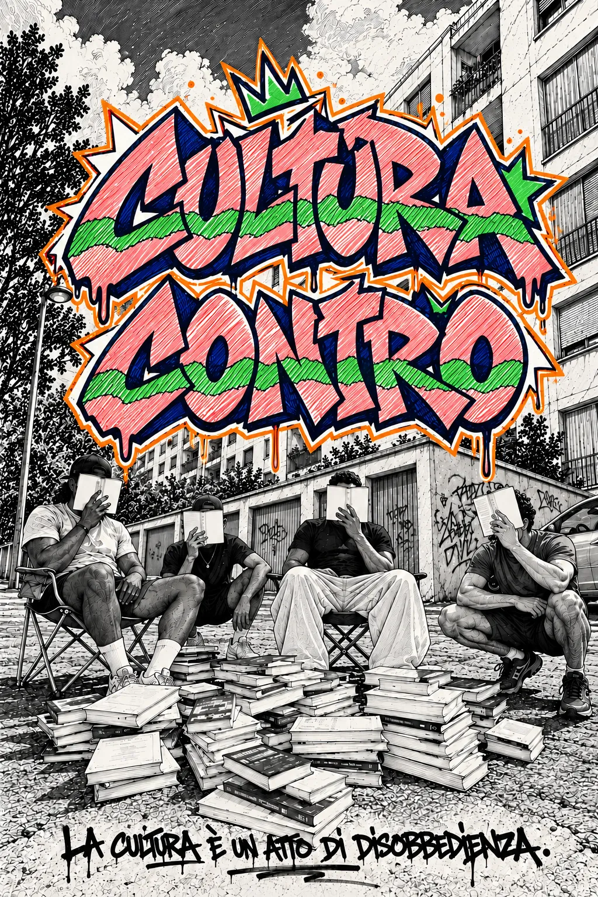

ConnessioneResistenzaRivoluzione
La cultura èun atto didisobbedienza.
Visione
Uno spazio da sviluppare.
Selezione
Un percorso di ascolto in quattro parti.
Il territorio, da vicino
Mappa
Manifesto
Cultura X Contro è un progetto apolitico, apartitico e areligioso.
Mette al centro le persone, la responsabilità e la comunità reale, contro le logiche istituzionali che spengono il pensiero, addomesticano la cultura e trasformano le relazioni in pubblico passivo.
Cultura
La cultura non è decoro, non è ornamento, non è consumo passivo.
È presa di posizione, esercizio critico, conflitto con l'ovvio.
Contro
Essere contro non significa opporsi per riflesso.
Significa rifiutare ciò che appiattisce, semplifica, addomestica.
È separare senza chiedere scusa.
Il gusto
Il gusto è disciplina dello sguardo, sensibilità e capacità di selezione.
Lo stile
Ogni stile autentico è una sintesi di necessità e misura.
È coerenza tra forma e visione nella precisione del gesto.
Da qui in poi si aggiungeranno nel tempo.
Eventi
Evento 1 – Hip Hop Culture
TBAUn approfondimento sull’hip hop come movimento culturale multidisciplinare, analizzandone le origini, il contesto sociale e il ruolo come strumento di espressione e identità.
Evento 2 – Club Culture
TBAUn focus sulla club culture, a partire dalla nascita di house e techno come spazi di aggregazione, sperimentazione musicale e libertà espressiva, fino alle loro evoluzioni contemporanee.
Evento 3 – Sound System Culture
TBAUn evento dedicato alla cultura dei sound system, intesa come pratica collettiva, sonora e politica, capace di creare comunità temporanee attraverso il suono.
Evento 4 – Writing and Skateboarding
TBAUn evento dedicato alla cultura del writing come forma di espressione urbana, linguaggio visivo e pratica identitaria, analizzata nel suo contesto storico e nel suo impatto culturale.
Un focus sulla cultura dello skateboarding come pratica urbana e comunitaria, espressione di autonomia, stile di vita e appropriazione dello spazio pubblico.
Cultura X Contro
Spazio libero in cui celebrare la vita
TBA
Richiesta partecipazione attiva
Onasty
About me
In giro dicono che sia un tipo imprevedibile.
E' inoltre il fondatore di Cultura Contro, un progetto nato dalla convinzione che, in un'epoca dominata dal consumo rapido dei contenuti, sia necessario andare controcorrente e restituire alla cultura il suo ruolo più autentico per stimolare il pensiero critico e generare nuove forme di incontro e dialogo.
My philosophy
"Un buon viaggiatore non ha piani precisi e il suo scopo non è arrivare."
Lao Tzu
Le radici del mio suono
Merch
Drop iniziale
T-shirt + 2 mixtape e un beatape esclusivi.
T-shirt bianca
25 EUR
T-shirt nera
25 EUR
Non è solo prodotto, è un modo per sostenere Cultura X Contro.
Il merch arriverà con due dj set esclusivi di Onasty e un beatape riservato.
T-shirt